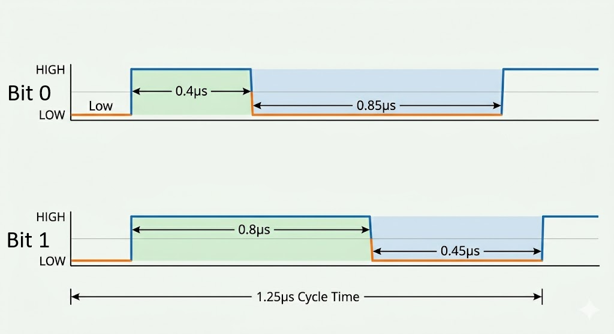

Transmisja jednoprzewodowa: dioda ARGB (WS2812B)
W systemach wbudowanych stosuje się także protokoły przesyłu danych za pomocą tylko jednego przewodu sygnałowego (oraz wspólnej linii masy GND).
W tym rozdziale skupimy się na specyficznym, niezwykle popularnym protokole służącym do obsługi inteligentnych diod ARGB (WS2812B / NeoPixel), w które między innymi fabrycznie wyposażona jest nasza płytka deweloperska.
1-Wire vs Single-Wire
Choć pojęcia te bywają potocznie używane zamiennie, oznaczają dwa różne standardy:
- Dallas 1-Wire – dwukierunkowa, relatywnie wolna magistrala z unikalnym 64-bitowym adresowaniem sprzętowym każdego układu, używana głownie do czujników (np. popularnego czujnika temperatury DS18B20).
- Custom Single-Wire (NZR) – jednokierunkowy, szybki protokół kaskadowy bez sprzętowego adresowania, stosowany wyłącznie do sterowania matrycami i paskami LED (np. WS2812B). To właśnie nim zajmiemy się w tej lekcji.
🔌 Charakterystyka fizyczna
Protokół sterowania diodami WS2812B opiera się na szybkim przesyłaniu cyfrowego sygnału napięciowego w trybie simplex (tylko w jedną stronę: od kontrolera do odbiorników).
Fizyczna struktura takiego układu opiera się na inteligentnych diodach. Dioda WS2812B (zazwyczaj w obudowie SMD 5050) nie jest zwykłą diodą LED. W jej wnętrzu zintegrowano:
- Trzy diody LED: Czerwoną (R), Zieloną (G) i Niebieską (B).
- Układ scalony (kontroler): Odpowiada za odczyt i dekodowanie cyfrowego sygnału oraz sterowanie jasnością poszczególnych barw poprzez PWM.
Kaskadowe łączenie i "adresowanie"
Transmisja nie używa fizycznych adresów jak I2C. Zamiast tego adresowanie odbywa się geometrycznie. Sygnał z mikrokontrolera trafia najpierw do pinu wejściowego DI (Data In) pierwszej diody w łańcuchu. Układ scalony tej diody "odcina" dla siebie pierwszy pakiet danych (swój kolor), a całą resztę przesyła dalej ze swojego pinu wyjściowego DO (Data Out) prosto do pinu DI kolejnej diody. Dzięki temu można sterować łańcuchem setek diod używając zaledwie jednego pinu w ESP32.
📊 Charakterystyka logiczna (Anatomia transmisji)
Z powodu braku dodatkowej linii zegarowej (SCLK), odbiorniki muszą odzyskiwać informację o czasie z samego sygnału danych. Protokół wykorzystuje standard NZR (Non-Return-to-Zero), w którym informacja o stanie logicznym bitu jest kodowana czasem trwania stanu wysokiego (\(T_H\)) i niskiego (\(T_L\)) w jednym, stałym cyklu bitowym.
Każda dioda oczekuje ramki składającej się z 24 bitów (po 8 bitów na składową koloru, co daje 24-bitową głębię kolorów, czyli 16,7 miliona barw). Bity zazwyczaj ułożone są w kolejności GRB (Zielony, Czerwony, Niebieski).
Kodowanie impulsów czasowych:
- Bit
0: krótki stan wysoki (\(T_{0H} \approx 0.4\ \mu\text{s}\)), po którym następuje długi stan niski (\(T_{0L} \approx 0.85\ \mu\text{s}\)). - Bit
1: długi stan wysoki (\(T_{1H} \approx 0.8\ \mu\text{s}\)), po którym następuje krótki stan niski (\(T_{1L} \approx 0.45\ \mu\text{s}\)). - Sygnał resetu (Zatrzask): utrzymanie stanu niskiego przez czas dłuższy niż \(50\ \mu\text{s}\) powoduje zakończenie transmisji ramki. Układy scalone zatrzaskują wtedy odcięte dane w swoich rejestrach, co skutkuje natychmiastową, jednoczesną aktualizacją kolorów w całym łańcuchu.

📦 Obsługa sprzętowa w ESP32-C6
Ponieważ czasy trwania impulsów muszą być dotrzymane z dokładnością do kilkudziesięciu nanosekund, generowanie takiego sygnału programowo (bit-banging poprzez szybkie włączanie/wyłączanie pinu w kodzie) jest trudne i mocno obciąża procesor. Każde przerwanie systemowe zakłóciłoby strukturę czasową ramki, powodując migotanie diod lub błędne kolory.
Aby temu zapobiec, układy ESP32-C6 wykorzystują wbudowane bloki sprzętowe:
- RMT (Remote Control): Nadajnik podczerwieni, który potrafi sprzętowo generować precyzyjne przebiegi czasowe na podstawie zdefiniowanych czasów trwania stanów wysokich i niskich.
- SPI: Wykorzystuje wysyłanie odpowiednio uformowanych bajtów danych z dużą częstotliwością tak, aby sekwencje bitów na linii MOSI udawały impulsy o szerokościach wymaganych przez WS2812B.
🎯 Ćwiczenie praktyczne: Wbudowana dioda ARGB
Standardowa płytka deweloperska ESP32-C6 DevKit posiada wbudowaną adresowalną diodę RGB podłączoną wewnętrznie do pinu GPIO8.
Do jej obsłużenia wykorzystamy najpopularniejszą bibliotekę Adafruit NeoPixel.
Instalacja biblioteki
W Arduino IDE wybierz z menu górnego Szkic -> Dołącz bibliotekę -> Zarządzaj bibliotekami. Wpisz w polu wyszukiwania Adafruit NeoPixel i zainstaluj najnowszą wersję.
Kod programu: Cykliczna zmiana kolorów
Wgraj poniższy program na swoją płytkę. Program kolejno zapala diodę w kolorach podstawowych (Czerwony, Zielony, Niebieski).
#include <Adafruit_NeoPixel.h>
#define PIN_LED 8 // Pin, do którego podłączona jest wbudowana dioda RGB
#define NUM_PIXELS 1 // Liczba diod w łańcuchu (wbudowana jest tylko jedna)
// Konfiguracja obiektu diody:
// - NUM_PIXELS: liczba diod
// - PIN_LED: pin sygnałowy
// - NEO_GRB + NEO_KHZ800: kolejność kolorów w ramce (GRB) i częstotliwość (800 kHz)
Adafruit_NeoPixel led(NUM_PIXELS, PIN_LED, NEO_GRB + NEO_KHZ800);
void setup() {
led.begin(); // Inicjalizacja linii danych
led.setBrightness(30); // Ograniczenie jasności (zakres 0-255). Wbudowane diody świecą bardzo mocno!
}
void loop() {
// Ustawienie koloru czerwonego (R=255, G=0, B=0)
led.setPixelColor(0, led.Color(255, 0, 0));
led.show(); // Wysłanie danych i aktualizacja fizycznego stanu diody
delay(1000);
// Ustawienie koloru zielonego (R=0, G=255, B=0)
led.setPixelColor(0, led.Color(0, 255, 0));
led.show();
delay(1000);
// Ustawienie koloru niebieskiego (R=0, G=0, B=255)
led.setPixelColor(0, led.Color(0, 0, 255));
led.show();
delay(1000);
}
🛠️ Zadanie: Płynne "oddychanie" diody (Breathing Effect)
Napisz program, w którym wbudowana dioda płynnie rozjaśnia się i ściemnia (np. w kolorze fioletowym – kombinacja czerwonego i niebieskiego). Wykorzystaj pętle for oraz metodę led.setBrightness(wartość) do regulowania jasności świecenia diody.
Pamiętaj, by po każdej zmianie jasności wywołać metodę led.show(), a maksymalna jasność nie przekraczała 100 ze względów bezpieczeństwa dla oczu.
Pokaż rozwiązanie
#include <Adafruit_NeoPixel.h>
#define PIN_LED 8
#define NUM_PIXELS 1
Adafruit_NeoPixel led(NUM_PIXELS, PIN_LED, NEO_GRB + NEO_KHZ800);
void setup() {
led.begin();
// Ustawiamy stałą barwę (fioletowy: R=128, G=0, B=128)
led.setPixelColor(0, led.Color(128, 0, 128));
}
void loop() {
// Płynne rozjaśnianie:
for (int jasnosc = 0; jasnosc <= 100; jasnosc++) {
led.setBrightness(jasnosc);
led.show();
delay(10);
}
// Płynne ściemnianie:
for (int jasnosc = 100; jasnosc >= 0; jasnosc--) {
led.setBrightness(jasnosc);
led.show();
delay(10);
}
}